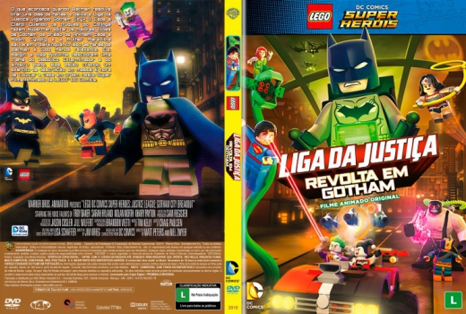

Outro Título:LEGO DC Comics Super Heroes: Justice League - Gotham City Breakout
País:United States, 78 minutos
Idiomas falados:Espanhol, Inglês, Português
Gênero(s):Animação, Família, Aventura, Ação, Comédia
Diretor(s):Matt Peters, Melchior Zwyer
Escritor(es):Jim Krieg
Codec:MPEG-2 (DVD)
Número: 5781


Certificado:L
Sinopse:
O combate ao crime é um trabalho em tempo integral e Batman nunca tira férias. Isso até quando ele finalmente concorda em deixar Batgirl e Asa Noturna levá-lo para uma merecida viagem – deixando a cidade de Gotham sob os olhares atentos da Liga da Justiça. Mas Batman está longe de tirar um descanso quando o trio encontra um velho inimigo em sua aventura, e a Liga da Justiça descobre o quão ocupado Batman fica no dia a dia.
Elenco:


Tipo de mídia: DVD5,
Legendas: Espanhol, Inglês, Português, Sem Legendas
Alugado: Não
Tela: Anamorphic Widescreen